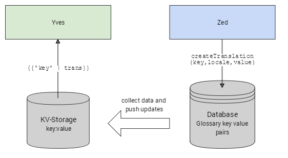
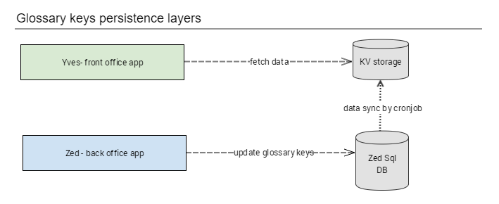

How Translations are Managed - Glossary
The key concept for rendering web pages with translated content very fast and with limited resource usage is using a key-value storage.
Yves has no connection to Zed’s SQL database and it fetches all dynamic data from a key-value storage(Redis) and a search engine(Elasticsearch). This data contains translations but also product information, product categories, URL mappings, stock information, image paths.
Accessing the key-value storage (Redis) is faster than making a request to Zed’s SQL database. Also, by limiting the connections to the SQL database, the performance of the entire application is optimized.
The localized content is added by using Zed’s back-office user interface. For every configured locale, the back-office user can add the corresponding resource such as translations or path to images. The changes are updated in Zed’s SQL database.
The diagram bellow pictures the DB schema for the tables in which the translations are being stored.

https://www.gliffy.com/go/html5/9959279
When the web application is first installed, the data stored in Zed’s database is exported in the key-value storage (Redis) used by Yves. To assure that the key-value storage is in sync with the data stored in the SQL database, a cronjob is configured to run in order to make these updates. The cronjob can be configured to trigger as often and when is more convenient, but its execution can also be started manually.
console collector:storage:exportThe schema bellow summarizes the levels of persistence used in order to offer localized content into the front office interface ( Yves ).

https://www.gliffy.com/go/share/spjm4p7he74ehonteu75
Command query separation
We can consider the key-value storage as a denormalized model of the relational model stored in the Sql database and the request of rendering a page as a query that the user makes. Statistically, query requests are happening a lot more often than command requests ( such as checkout or submitting a payment) and using a dedicated storage for them brings a lot of speed in the application.
Another advantage of using a denormalized model for displaying localized content is that we don’t have to do the transformations of the objects stored in the relational database when using them on the client side logic.